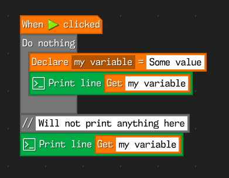
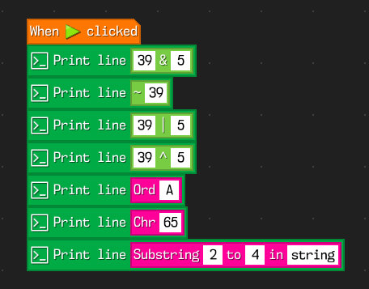
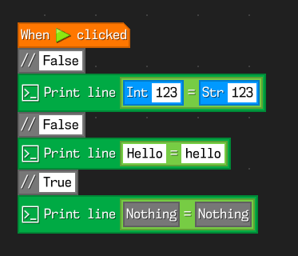
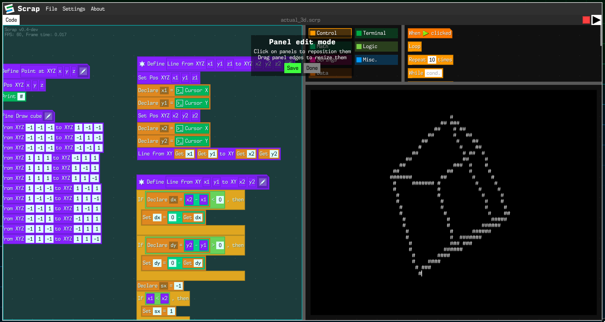

Scrap
Scrap is a new block based programming language with the aim towards advanced users. It is written in pure C and mostly inspired by other block based languages such as Scratch and its forks such as Turbowarp.
Downloads
Notable advantages from scratch
Faster runtime (Still not faster than Turbowarp because Scrap is interpreted for now)
The code runs in a separate thread. This solves some performance issues compared to Scratch
New, more advanced else if, else blocks, which eliminate a lot of nested checks with if-else blocks (i.e. more flexible variant of if-else block in Snap!)
Variables can have a lifetime, which avoids variable name conflicts and allows to make temporary variables
Custom blocks can return values and can be used as an argument for other block
Various string manipulation blocks and bitwise operator blocks
Data type conversion functions
More strict checks for [[] = []] and [[] != []] blocks. Now they are case sensitive and will check data type for equality
Lists are now a data type instead of a different type of variable, this allows nesting lists inside a list (although it's not very convenient as of right now)
Modularized interface. Most of the interface can be rearranged or moved to another tab
FAQ
Q: Is it any better than something like Snap?
A: In its current state, no, but there are several features planned which will make it more comparable to these advanced coding platforms (like native compilation, static typing, first class functions, multithreading, graphics, etc.)
Q: Why GPLv3 when there are better licenses for that?
A: I did this mostly because scratch and turbowarp are endorsing open source (with the former even being licensed with AGPL), so i'm also endorsing that. The main plan now is to split up a project into an editor part (which will still be GPLv3) and a library/compiler part (which will be licensed more permissively). This should in theory resolve most of the licensing issues in future
Q: Any plans for mobile support?
A: Not at all. The UI was not designed with mobile features in mind, so i will not work on the mobile port any time soon. Unofficial ports are still welcome, though
Q: Are there any tigers in the project?
A: Maybe...